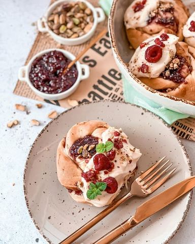

Moja beleška
SačuvanoSastojci
- Sastojci
- Još
- Preliv
Priprema
U manju činijicu staviti kvasac koji ste usitnili izmedju prstiju, toplo mleko i kašičicu šećera. U roku od 10ak minuta kvasac će lepo nadoći i spreman je za korišćenje. U posudi u kojoj ćete umesiti smesu sipajte brašno i šećer, promešajte pa tome dodajte jaja, toplu vodu i istopljen puter, smesu umutite mikserom, nastavkom za testo. Potom u posudu koju ste prethodno premazali za mrvicom putera ili ulja prebacite testo, prekrijte providnom folijom i ostavite sat vremena da narasta. Testo zatim umesite na pobrašnjenoj podlozi, pa ga razvucite u oblik pravougaonika, premažite dzemom i pospite seckanim pistaćima po ukusu, pa preklopite. Oklagijom predjite lagano preko površine. Oštrim nožem ili sekačem za pizzu isecite trakice pa svaku uvijte. Potom od svake napravite venčić. Napravite malo razmaka izmedju svakog venčića u posudi , pa pecite, meni nije trebalo više od 25 min, rerna je bila zagrejana na 180C. Na sveže pečene i tople možete staviti preliv, dovoljno je da ste ga prethodno žicom samo lepo sjedinili, još po neka mrvica pistaća i sveža malina i ne čekajte da se prohladi 🥰🥰🥰
Originalni opis sa Instagrama
Malina pistać venčići 🌸 Možda nije svojstveno ovim vrelim danima, ali toliko je slatko kad se preskoče i viljuška i nož pa se umažu prsti da se “smeši brk” 🥰 Mekano i vazdušasto slatko puter testo, premazano džemom od malina , posuto seckanim pistaćima, pa još na kraju preliveno da verujem da već palite klime i proveravate da li su svi sastojci na broju 💓 Sastojci: •20 gr svežeg kvasca •100 ml toplog mleka •1 kašičica šećera •550 gr mekog belog brašna •40 gr šećera •2 jaja •100 ml tople vode •125gr istopljenog putera Još: •džem od maline @ukusiprirode.rs •sitno seckani pistaći Preliv: •100 gr krem sira •100 gr šećera u prahu •50 gr isropljenog putera •kašičica arome vanile U manju činijicu staviti kvasac koji ste usitnili izmedju prstiju, toplo mleko i kašičicu šećera. U roku od 10ak minuta kvasac će lepo nadoći i spreman je za korišćenje. U posudi u kojoj ćete umesiti smesu sipajte brašno i šećer, promešajte pa tome dodajte jaja, toplu vodu i istopljen puter, smesu umutite mikserom, nastavkom za testo. Potom u posudu koju ste prethodno premazali za mrvicom putera ili ulja prebacite testo, prekrijte providnom folijom i ostavite sat vremena da narasta. Testo zatim umesite na pobrašnjenoj podlozi, pa ga razvucite u oblik pravougaonika, premažite dzemom i pospite seckanim pistaćima po ukusu, pa preklopite. Oklagijom predjite lagano preko površine. Oštrim nožem ili sekačem za pizzu isecite trakice pa svaku uvijte. Potom od svake napravite venčić. Napravite malo razmaka izmedju svakog venčića u posudi , pa pecite, meni nije trebalo više od 25 min, rerna je bila zagrejana na 180C. Na sveže pečene i tople možete staviti preliv, dovoljno je da ste ga prethodno žicom samo lepo sjedinili, još po neka mrvica pistaća i sveža malina i ne čekajte da se prohladi 🥰🥰🥰 Uživajte 💓💓💓 • • • #peciva #testa #slatkotesto #vencici #malinapistac #mojirecepti #dezert #idejazadezert #zadovoljnahr #rassberry #easyrecipes #amateurphotography #foodloversofinstagram